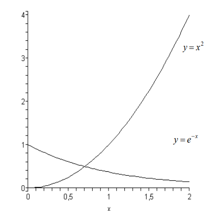

Методом Ньютона найти наименьший положительный корень уравнения \(x^2– e^{-x} = 0\) с точностью \(\varepsilon = 0,001\).
\(\textbf{Решение}\)
Необходимо найти отрезок \([a,b]\), на котором существует единственный корень данного уравнения. Для этого преобразуем уравнение к равносильному виду \(x^2= e^{-x}\) и найдем точки пересечения графиков \(y = x^2\) и \(y = e^{-x}\).

Очевидно, корень уравнения \(\zeta \in [0,5; 1]\). Выберем начальное приближение к корню \(х_0\) из условия: \(f(x_0)·f''(x_0) > 0\)
\(f''(x) = 2 – e^{-x} > 0\) на \([0,5; 1]\);
\(f(a) = f(0,5) < 0; f(b) = f(1) > 0 \Rightarrow x_0 = 1.\)
Результаты расчетов по формуле метода Ньютона: \(x_{n+1} = x_n - \frac{f(x_n)}{f'(x_n)}\) приведены в таблице:
| \(n\) | \(0\) | \(1\) | \(2\) | \(3\) |
| \(x_n\) | \(1,000\) | \(0,73304\) | \(0,70381\) | \(0,703467\) |
| \(|x_n - x_{n-1}|\) | \(-\) | \(0,27\) | \(0,029\) | \(0,00034\) |
| \(f(x_n)\) | \(0,63212\) | \(0,05690\) | \(0,00065\) | \(8,25\cdot10^{-7}\) |
\(\textbf{Вывод:}\) наименьший положительный корень уравнения \(x^2 – e^{-x} = 0\), равный \(0,703467\), был найден методом Ньютона с требуемой точностью за три итерации.